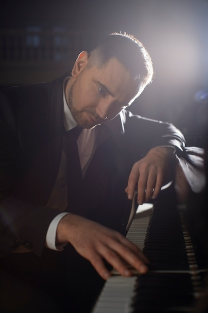
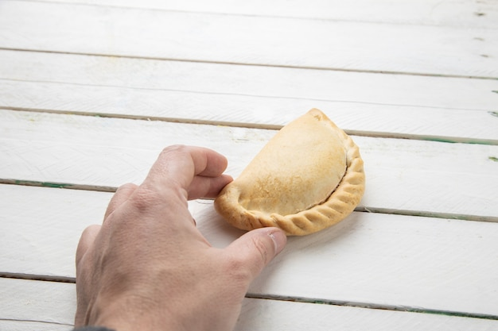
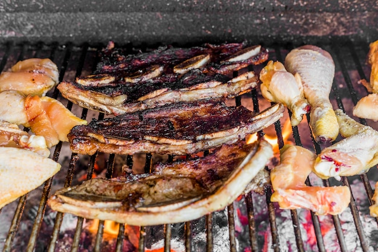
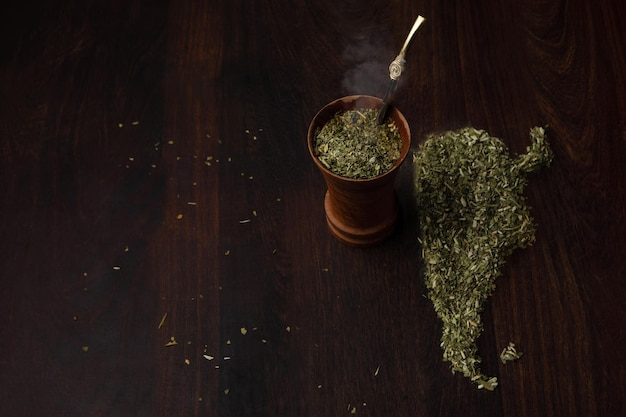
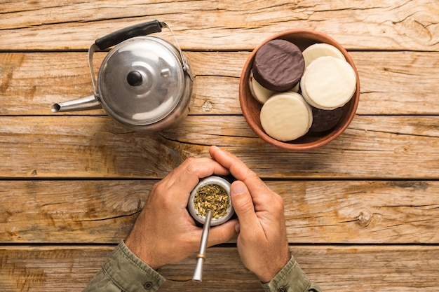

Tú sales desde San Juan, la familia desde Orlando, y se encuentran en Panamá para volar juntos a Buenos Aires. Jacarandás, cataratas, lagos patagónicos, la cordillera y una noche cantando en un piano bar porteño.
Copa vuela desde San Juan y desde Orlando a Panamá, y desde ahí sale el vuelo a Buenos Aires. Reservando en la misma aerolínea, se encuentran en el aeropuerto de Tocumen y cruzan el continente sentados juntos.
Toca una ciudad del mapa para verla, o presiona el botón para ver el recorrido completo. Los tramos internos usan vuelos directos de Aerolíneas Argentinas que no pasan por Buenos Aires.
Toca un día, usa las flechas o desliza la foto. Cada día trae mañana, tarde y noche, un dato para aprender, cómo hacerlo como un local y dónde comer. Los marcados con ★ tienen algo especial.
Es la moda de la noche de Buenos Aires: un piano, un pianista que toca los clásicos que todos conocen y un bar entero cantando a coro. El más famoso es Sandwich, los miércoles en Chacarita, y justo el miércoles 10 de noviembre estamos en la ciudad.

Para practicar antes: lo que se canta en Buenos Aires
Con Airbnb tienen cocina, lavadora y más espacio para la familia; con hotel, desayuno incluido y alguien que resuelve todo. Cambia entre los dos y entre los tres niveles: la calculadora de abajo se ajusta sola.
Los departamentos en Palermo y las cabañas de Bariloche salen más baratos que dos habitaciones de hotel, y desayunar en casa baja el gasto de comida cerca de un 12%. En Bariloche una cabaña con chimenea frente al lago es parte de la experiencia.
Que tenga agua caliente y calefacción (Bariloche es frío de noche), aire acondicionado en Iguazú, fotos reales de las camas, calificación de 4.8 o más y anfitrión con muchas reseñas. Sumar la tarifa de limpieza al comparar.
Una combinación que funciona: Airbnb en Buenos Aires y Bariloche (las estadías largas) y hotel en Iguazú y Mendoza (dos noches, piscina y excursiones que te buscan en la puerta).
En Argentina se almuerza a la 1:30 y se cena a las 9 de la noche. Los bodegones son restaurantes de barrio con porciones para compartir: una milanesa alcanza para dos. Precios aproximados por persona con bebida.




Elige un plan arriba o activa los ahorros uno por uno: cada tarjeta te dice cuánto baja el total con tus viajeros y tus opciones. Montos aproximados en dólares a octubre de 2026; conviene sumar un 10 a 15% de margen.
Pon alertas en Google Flights para SJU y MCO a Buenos Aires desde ahora. Copa y Arajet sacan promociones de Sudamérica varias veces al año; noviembre 2027 se debe comprar entre abril y julio.
Las compras con tarjeta extranjera se liquidan al cambio de mercado, y en hoteles quedan exentas del IVA de 21% si pides factura B.
Muchos bodegones ofrecen plato, bebida y postre por US$8 a 12. Comer fuerte al mediodía y cenar liviano en casa baja mucho la cuenta.
Un kilo de vacío o entraña en la carnicería cuesta mucho menos que en una parrilla. Busquen Airbnb con parrilla y hagan una noche de asado en familia.
Guardando la entrada del primer día, el segundo día consecutivo cuesta 50%. Menores de 6 años no pagan entrada al parque.
Museo Nacional de Bellas Artes, el Rosedal, la Reserva Ecológica, Caminito, el Cementerio de la Recoleta y el Hito Tres Fronteras en Iguazú no cobran entrada.
La línea 20 llega al Llao Llao, Puerto Pañuelo y la base del Cerro Campanario; la 55 al Cerro Catedral. Con tarjeta SUBE cuesta una fracción de un taxi.
En JetSMART, Flybondi y Arajet el pasaje base no incluye maleta. Viajando livianos y compartiendo una maleta cada dos personas, el ahorro se mantiene.
Cambio de referencia US$1 = AR$1,450. Revisarlo antes de viajar; cambia seguido.
Mínima y máxima promedio. De la selva a la montaña hay 26 grados de diferencia: empacar en capas.